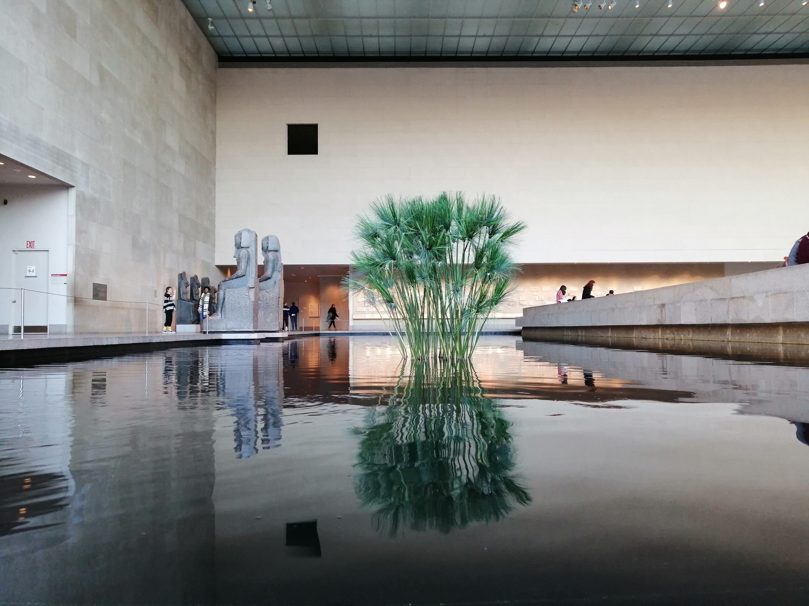

Metropolitain Museum of Art
This is one of the most iconic spots in the city, and if you are visiting the area and haven't been to the MET, it should be an absolute priority. My favorite room is the Egyptian Room, but the limited-time editions are always a must-see as well. Try to time your visit when you can visit the roof of the museum- it is a hidden gem!

Grand Banks
I never knew I loved dining on a boat in the middle of Manhattan until I visited Grand Banks! This Tribeca-docked boat offers incredible views, a fun crowd, and a perfectly decorated deck to enjoy your perfectly mixed cocktails and fresh oysters. This is a great spot to start your night- make sure to make a reservation more than a month in advance- this boat is "reely" knot" an experience you'll want to miss!

The High Line
If you have a free afternoon, head down to Hudson Yards and start your walk on the High Line. The High Line is a 1.45 mile walk 30 feet above street level on an old rail line, with river & city views. It's a great way to see Chelsea- feel free to get on and off as you please! You'll end up in Chelsea right next to the Museum of Modern Art- another must-see!